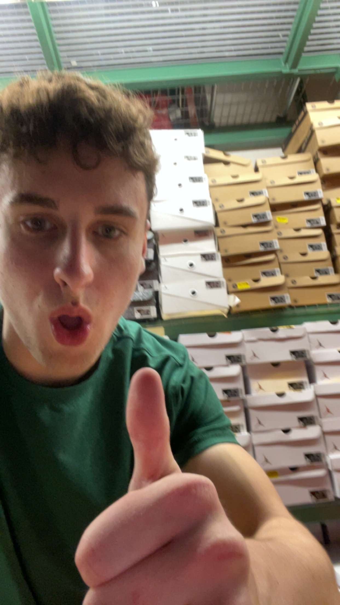

Sean Sullivan was born on January 30th of 2007. Weighing 10 pounds, he was a considerably fat baby. Sean's childhood interests included playing with Hess trucks as well as watching Lazytown and the Mickey Mouse Clubhouse. Sean's precesne first blessed the town of Whitman, where his family would live until the year of 2011. The move would later be referred to as The Greater Migration. April 6th of 2011, the Sullivan family moves to a new home in Abington. Sean had a room all to himself for the very first time and couldn't believe how big it was.
Education
Sean began his education graduating with prestigous grades from Center School. From there, after careful consideration, he commited to Beaver Brook Elementary. Four years later he advanced to the Abignton Middle School, which had just been constructed that year. Finally, Sean began attending Abignton High School in the fall of 2022. Sean continues to get a stellar education there to this day. His graduation is set for the spring of 2025 and, as of now, it is unknown where Sean continue his education after that.
Work
For the past few months, Sean has been employed at Dick's Sporting Goods. Sean is very proud to be a Dick. His job mostly is practically the same as a waiter at a restuarant, instead he gets shoes for people instead of food and doesn't get tipped. His boss is evil and best compared to a supervillian, mainly due to the fact that she makes him be productive and do his job, pure evil. While people can be very difficult to work with and there can be the occasional kayak catastrophe, Sean enjoys his job becuase he can work with all his friends such as Ryan LaRosa, Scott Noble, Evan Faulkner, etc.

Sports
Sean started his staggering sports career playing soccer and basketball in elementary school. Sean liked soccer signifigantly more than basketball. Sean was never any good at basketball; however, rumors circled that the other teams were just doping to get ahead. Regardless, Sean stopped playing both once he got to middle school. In his middle school years, Sean played flag football. Michael Reilly and his family's monopoloy other the town rigged the teams every year, leading to Sean not finding much success each season. Sean played football for the first time his sophmore year of high school. He wasn't very big at the time and spent msot of his time in season on his back. Returning for his junior year he was bigger and better, yet still performed rather poorly. Sean claims it wasn't his fualt, it was simply that everyone else was just cheating.